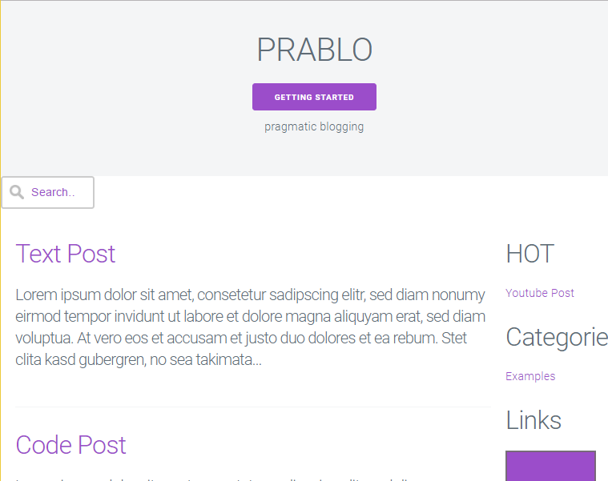
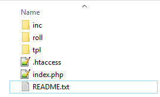

P R A B L O  pragmatic blogging
Installation & Setup — Docu
If you have any questions that are beyond the scope of this help file,
please do not hesitate to contact me via
Support Form.
I am always happy to help if you have any questions relating to this script.
Introduction
I put a lot of love into the new version of this script.
If you have any questions or would like to give me feedback,
I would love to hear them.
Your feedback is what inspires new ideas for future updates.
You can post your questions and feedback on my
Support Form.
As always, a BIG Thank You to all of my buyers,
I really appreciate your continued support & trust in me.
Pre-Installation
1. Unzip the Script
Unzip the ZIP file and take a look around at the file structure. You should see 3 folders and 3 files.
This is a new version, and not an update. You will want to install the script with a new database.
2. Create a new Database
First step is to create a mySQL database,
and if you do not have a default one, a database user.
This process is explained in great detail on many websites
and web hosts.
Once you have the database setup, you will need:
- Hostname usually 'localhost'
- db Name i.e. PRABLO
- db User i.e. db0815
- db Password i.e. pass4711
3. Upload Script
Upload all the files you unzipped to your web host, keeping the file system intact.
You should now have the following folder and files on your host account:
Installation
1. Run the Online Setup Wizard
Installation is quite easy and only takes a few minutes.
Once the script has finished uploading, simply go to
http://www.example.com/inc/install.php
(or http://www.example.com/SUBFOLDER/inc/install.php
wherever subfolder you uploaded it to)
and follow the on-screen instructions.
Easy to do, just follow the defaults and plug in your specific information.
2. Server Configuration Check
The script REQUIRES PHP 5.3+ & MySQLi Connection.
There is a Server Configuration Check that will display errors
before you will be able to install the script.
If all checks out, great. If not, you will not see the form and
will not be able to install the script.
Check with you host, and see if there is anything they can do for you.
3. Database Configuration
- usually localhost The hostname
- The name of the database db Name
- Your username to access the database db User
- Your database password db Password
Once you have input your database informations, check the admin account.
4. The Admin Account
Complete the admin account form. This is the administrator for the script.
This admin account cannot be deleted through any web UI,
only from within the /inc/settings.php file.
Download the File with your FTP Client,
use an Editor (i.e. Notepad++), make your changes and Upload the file by FTP.
5. Script Settings
Again, follow the defaults and plug in your site's specific information.
You can set your Administrator Account Data and Site Parameter to be anything you would like. See Settings Section for mor Details.
Once you have filled in the information for the Admin,
click the Go! Start the Installation button to complete the installation.
If everything was configured correctly, you will see the following:
For mySQL:
If you do not see the messages above, and get a blank screen or an error —
check your error logs.
Most of the time this happens due to your web account/host
not supporting a needed function.
This can happen even if you pass the pre-installation check.
Check with your web host and see if there is any thing they can do to help.
If you have any questions on this, please do not hesitate to contact me via my Support Center.
Once installation is completed, you will need to go back into your FTP application, and rename the installation file before you log in as Admin.
Settings
Once the script is installed,
you can update the Site Settings after opening the /inc/settings.php
in your editor (e.g. Notepad++).
This are the Site Settings that you can use:
-
Database Settings
- Hostname (usually localhost)
REQUIRED
$mysqli_hostname="localhost"; - Database Name (usually PRABLO)
REQUIRED
$mysqli_database="PRABLO"; - Database Username
REQUIRED
$mysqli_username=""; - Database Password
REQUIRED
$mysqli_password=""; - Admin Account Settings
- Login Username
REQUIRED
SHOULD BE CHANGED
$admin_username="demo"; - Login Password
REQUIRED
SHOULD BE CHANGED
$admin_password="demo"; - Script Settings
- Language
REQUIRED
Select Language and use Name of Files from /in/lang/ Folder and do not enter the Fileextention (.php) e.g. german or custom if translatet!$page_language='english'; - Theme Name
REQUIRED
Select one of the two given themes (milligram or gumba) or build your own theme. The theme templates (only header.php and footer.php) are saved in the /inc/tpl/THEMENAME/ folder. All files in the /inc/tpl/ folder are for the admin-mode and used by every theme.$page_tpl='milligram'; - Title Tag
Will be filled in the HTML Title-Tag on Startpage and append on the Title-Tag in every post-page. HINT: Use only a few characters.$page_title="PRABLO"; - Description
Could be used as Headline for your Startpage or filled in the HTML Meta-Tag (Discription) of every Page. HINT: The use of this parameter depends on the theme.$page_tagline="pragmatic blogging"; - Footer
Your can use this for a Copyright Hint e.g. '© 2017 Example Inc.'. HINT: Don't use HTML!$page_footer="powered by adilbo"; - Truncate Value
On the Startpage all Posts are shown with truncated content. This value set the number of charaters. HINT: If zero (0) is set, shurly no content is shown.$page_truncate=256; - Google Analytics Code
If you enter your Tracking ID from Google Analytics the Script automaticaly fill the needet JavaScript in every Page and Google will track your visitors. HINT: Don't forget to inform your visitors about the fact that they will be tracked on your page.$page_analytics='UA-11223344-1'; - Posts per Page
Set the number of posts that the pagination should show on one page. HINT: Don't set a value less than 2.$posts_per_page=7; - Use Lightbox?
The usage of this parameter depends on the selected theme. HINT: Set this to YES (true) if you use the 'gumba' theme, click an image post and you will see the effect.$page_uselightbox=true; - Use Categories?
This Script use a very easy implementation of categories. If this is activated you can save on or more keywords with a new post and this keywords are automaticaly the categories. HINT: If you have already serveral categories try to select an existing category if you submit a new post.$page_usecat=true; - Show Sidebar?
Select of all pages should have a Sidebar. HINT: If this is off it makes no sense to set e.g. 'Show Categories in Sidebar?' to YES (true) because if there is no sidebar you will not see the categories in the sidebar! ;-)$page_sidebar=true; - Show Post-Date?
Do you want to show the visitor the date of the post? HINT: You could change this every time you like, then the date is allways saved with every post.$page_showdate=true; - Show Categories in Sidebar?
Do you want to show the visitor the categories of all post in you sidebar? So you visitors can click a category link and see all posts only from this category. HINT: Remember, 'Show Sidebar' must be also set to YES (true).$page_catinsb=true; - Show Next and Previous Link after Post?
Show navigation links to the next and previous post after each Post? HINT: If there is not a big reason againt it set to YES (true), it's nice for the user ans also for SEO.$page_nextprev=true; - Use Ping-O-Matic?
It's a service to inform search engines that your blog has been updated. The service is pinged on every new post and also on every update (change) of a post. HINT: So your postings will get into the searchindex of e.g. Google etc.$page_pingomatic=true; - Show Social-Media Share Buttons?
Show the socialmedia chare button under the post for facebook, twitter, pinterest and so on? HINT: Read more about this service on www.sharethis.com$page_socialmedia=true; - Show Post Comments?
Let the visitor comment you postings? If set to YES (true) each visitor can comment, if he use the Disqus service. HINT: Read more about this service on www.disqus.com$page_comments=true; - Use PRAGMATIC-BLOGGIN Feature?
This is the feature the script gets its name from. If set to YES (true) the 'new post' form looks very different. The admin can only give a Link to an interesting page and the script try to write the post by it self. Give it a try, shurly you can edit the content that is generated automaticaly! HINT: Use this mode if you always write about other pages!$page_urlblogger=true; - Auto Link the Categories in the Post Content?
If set to YES (true) every content post is scanned and if there is a category keyword it will be autoamticaly linked with all posts of this category. HINT: Nice for the user and also for SEO!$page_crosslink=true; - Use Anti-Adblock Tool?
Your Link-Roll contains Ads? If so you maybe want them be delivert also if the user have an adblocker installed? So set this to YES (true) and each visitor with an activated adblocker will see a hint to please deactvate it. HINT: This will also work if you enter e.g. ads direct into you template!$page_antiadblock=true; - Show "Best Posts" Links in Sidebar?
If you have extern traffic from searchengines an intern function calculate the best posts and show them in the sidebar. HINT: The function show max. 7 posts!$page_hotlinks=true; - Show Seeking-Slot?
Want to give the visitor the chance to search your blog? Set this to YES (true) and the seeking-slot will be shown. HINT: Activate this, search is a nice feature for your visitors!$page_seekingslot=true; - Show Link-Roll?
Edit the /roll/data.txt file and put your HTML links or adverts into this file. Each line must be one link or ad. You can use the Placeholder {URL-TO-ROLL-FOLDER} for the URL if you use Images. HINT: Take a look at the examples and everything should be clear!$page_linkroll=true; - Number of Links in Link-Roll
Define the max. number of links or ads that are randomly shown. HINT: Don't set to zero (0) if you want to deactivate this, use $page_linkroll=false;$page_linknumber=2; - Script installed correctly?
This Parameter is automaticaly set by the /inc/install.php File. If the Script is installed the Value is set to true, by default it is set to false. Don't set this to false if your Script is already installed or everybody can overwrite your Settings in /inc/settings.php File.$page_isinstalled=false;
Set up the script to fit your specific site's needs. All setting options have explanations over the specific field.
$page_isinstalled=false; in the file
/inc/settings.php.
Localizations
1. Language Files
The script is translation ready.
The primary Localization files are located in the folder named /inc/lang/.
If you want to use a different language other then English, you will need to
translate the /inc/lang/english.php file and
save it under your language name e.g /inc/lang/german.php.
Once translated, you can then load that file via the Global Site Setting
$page_language='german';
in the /inc/settings.php file.

2. Date Formats
To change the way dates are formatted,
you will need to modify the /inc/date.php file.
Follow the instructions in the file.
Uncomment (remove the double slash - //)
from the date format you want to use
Comment (Add a double slash - //)
to the front of the date formats you do NOT want to use
Styling
While the script already has two modern interface you can develop your individual Template by your own!
Theme "milligram"
The first Template based on
Milligramp
(version 1.3.0), a minimalist CSS framework under MIT Licence.
This is very easy, however, you will need to be able to write HTML/CSS code.
For those that aren't versed, here is a quick overview.
The easiest way to change the look is by editing the CSS file named custom.css.
These files can be found in the template folder /tpl/milligram/.
The milligram.min.css file is the original, unmodified style,
and you should not alter this file.
If you want to make any changes to the components,
you should add/modify the changes to the custom.css file only.
The script uses only two images:
- Search-Icon:
search.png (21px x 21px)magnifying glass in the seeking-slot - Favicon:
icon.png (60px x 60px)shortcut icon
Some effects are integrated and they use JavaScript - all three files are found in the /tpl/gumba/js/ folder:
- jquery.1.11.min.js
- jquery.fluidbox.min.js (Licensed under the MIT License)
- milligram.js
Fluidbox, is a jQuery plugin for beautiful lightboxes.
Check out all of details & usage at: http://terrymun.github.io/Fluidbox/.
If you want to use it remember to set the $page_uselightbox = true;
Parameter in the /inc/settings.php file.
Theme "gumba"
The second Template based on
Gumba
, a minimalist HTML5 template.
This is very easy, however, you will need to be able to write HTML/CSS code.
For those that aren't versed, here is a quick overview.
The easiest way to change the look is by editing the CSS file named custom.css.
These files can be found in the template folder /tpl/gumba/.
The gumba.css file is the original, unmodified style,
and you should not alter this file.
If you want to make any changes to the components,
you should add/modify the changes to the custom.css file only.
The script uses only two images:
- Search-Icon:
search.png (21px x 21px)magnifying glass in the seeking-slot - Favicon:
icon.png (60px x 60px)shortcut icon
Some effects are integrated and they use JavaScript - all three files are found in the /tpl/gumba/js/ folder:
- jquery.1.11.min.js
- jquery.fluidbox.min.js (Licensed under the MIT License)
- gumba.js
Fluidbox, is a jQuery plugin for beautiful lightboxes.
Check out all of details & usage at: http://terrymun.github.io/Fluidbox/.
If you want to use it remember to set the $page_uselightbox = true;
Parameter in the /inc/settings.php file.
Help & Support
Please, if you have any questions, run into any issues or just need some help,
do not hesitate to contact me via my
Support Form.
I believe in providing the best support possible.
If you are thinking of giving this script anything less then 5 Stars,
please tell me what I can do to make it a 5 Star experience for you.
I love to hear feedback,
and welcome any suggestions you may have to make my software better.
FTP Hint
If you are having problems with the script after successfully installing and
logging in the for the first time you should check your FTP software settings.
I have found in many cases that numerous FTP programs are not uploading files correctly.
Check your FTP program to see if it is uploading files in ASCII -
which is causing the file code to be uploaded in one long line.
Try changing it to Binary and uploading the files again.
Upload everything except the settings file
(or better yet, if you have not started using the script,
just wipe the install and the database and reinstall a fresh copy).
See the image how to set e.g.
FileZilla
to binary transfer mode.